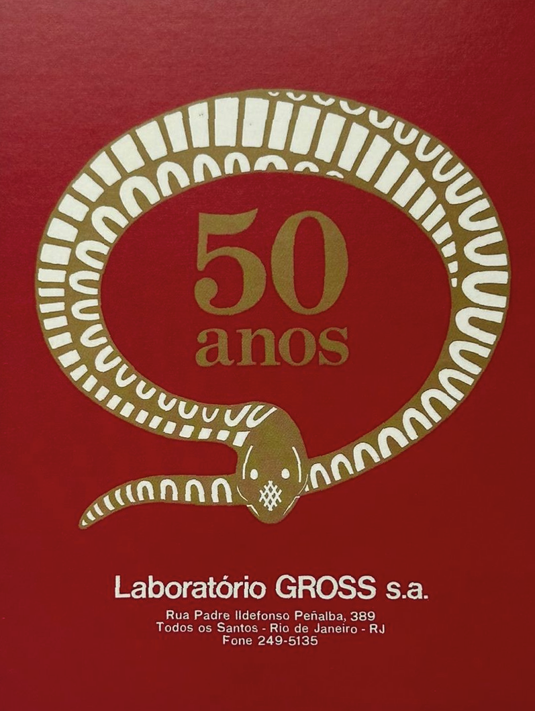

Ficha Técnica
Cartaz comemorativo dos 50 anos do Laboratório Gross
O cartaz celebra os cinquenta anos de fundação do Laboratório Gross. A composição apresenta uma serpente estilizada como símbolo da medicina.
Notas Curatoriais
O cartaz celebra os cinquenta anos de fundação do Laboratório Gross. A composição apresenta uma serpente estilizada, símbolo tradicional associado à medicina e à farmacologia desde a Antiguidade. A peça integra o conjunto de materiais institucionais produzidos para reforçar a identidade da empresa e marcar momentos comemorativos de sua trajetória.
Retrato
Século XVII
Barroco